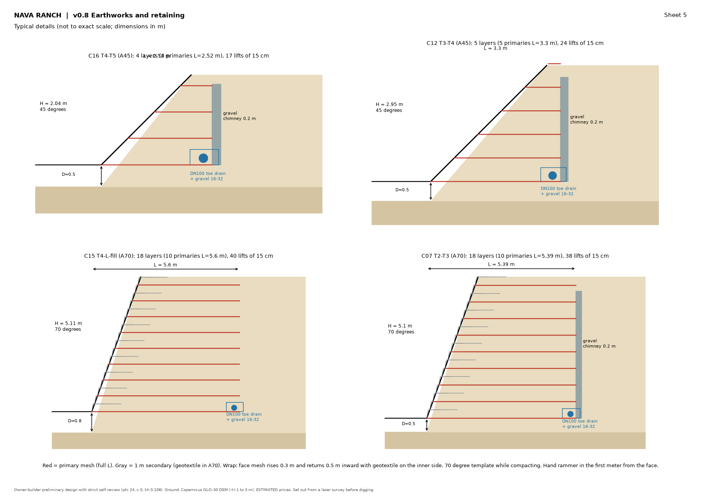

Asset: terrain
Owner-builder pre-design, self-reviewed with simplified checks (EC5, EC7, EC8). Loads and soil values are estimates and must be verified on site.
Earthworks and retaining (v0.8)
Five fully flat terraces built from the site's own soil, with no imported fill. The steps between terraces are retained with reinforced soil (MSE): layers of galvanized welded-wire mesh every 30 cm, compacted in 15 cm lifts, with the face wrapped in geotextile or vegetated at 45 degrees under the decks. Cut edges use soil nailing, and low edges use a 1:3 slope with mesh layers, grass and live willow stakes.
Every face has a toe drain with perforated pipe, a gravel chimney drain where it retains natural slope, and a controlled outlet to the terrace below. Sliding, overturning, bearing capacity, global stability and seismic action are checked for each face. Construction starts with the lower terraces (T5 and T4), where the first cabins go.
